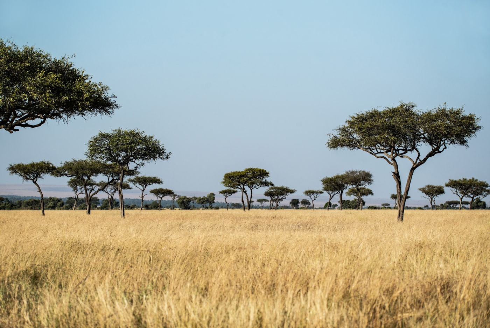

Local roots. Global standards. Engineered impact.
We exist to make water-vulnerable communities resilient — and to prove it, transparently, to the people who fund that work.
The bridge between global capital and Africa's drylands
SkyVast Green Initiative (SGI) is a U.S.-registered 501(c)(3) nonprofit transforming Kenya's arid and semi-arid lands (ASALs) through water-smart, community-powered solutions that are local, data-driven and deeply rooted in equity.
Founded in 2021, we operate from two homes — Acworth, Georgia in the United States and Thindigua, Kenya — so we can offer donors both tax-deductible giving and direct, visible impact on the ground. Today we work across nine counties, and we instrument every project with technology so resilience is something you can measure, not just hope for.

Our mission
To engineer durable water, food and climate resilience in Kenya's drylands — community by community — and to verify every outcome so trust is earned, not assumed.
Our vision
An Africa where no community is defined by drought — where water, livelihoods and ecosystems are secured at every scale, from a single home to a whole county.
Our promise
Six outcomes from one investment, technology-verified end to end. We engineer resilience at every scale and prove it on a live dashboard.
Two homes, one accountable system
Our dual legal presence is a deliberate design choice — it gives funders the benefits of a U.S. nonprofit and the directness of on-the-ground delivery.
501(c)(3) · Acworth, Georgia
Tax-deductible giving for U.S. donors and corporates, formal governance, and ESG-ready reporting that stands up to board scrutiny.
- Tax-deductible donations & grants
- Transparent financial governance
Ground operations · Thindigua
Local teams, local labour and local ownership — so impact is direct, visible and embedded in the communities we serve.
- Direct, community-led delivery
- Real-time, verifiable field data
Nine counties across Kenya's ASALs
We focus where water stress is highest and the leverage of every dollar is greatest — the arid and semi-arid lands that are home to millions of Kenya's most climate-exposed families.
From a single tank to a verified engine
SkyVast is founded
Registered as a U.S. 501(c)(3) with a clear thesis: pair global capital with local Kenyan delivery to engineer water resilience.
First systems & reforestation
Household tanks, water pans and the first tree-planting drives take root across the eastern ASAL counties.
Technology verification
GPS-tagging, AI tracking and live dashboards turn every deployment into auditable, donor-ready proof.
9 counties & scaling
3,000+ families, 2M+ trees and 1B+ litres harvested — with a four-Pack model ready to scale to $1M+ county systems.
Help us engineer the next community's resilience.
Fund a Pack, partner on ESG, or volunteer your skills. Every contribution is tracked, verified and reported.